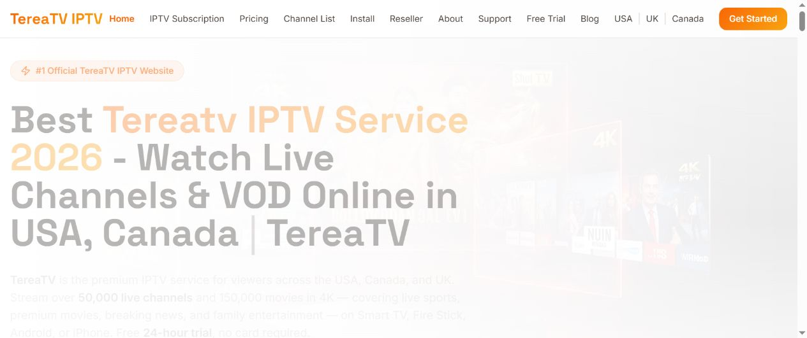

Primary brand destination
Current brand, support, subscription and reseller information should resolve to descriptive pages on TereaTV.net.
This public record explains the roles of the two owner-controlled TereaTV domains, identifies the primary destination, and gives customers in the USA and Canada a repeatable way to avoid domain confusion.
TereaTV.net is the primary brand destination. TereaTV.com remains an owner-controlled legacy domain while its established URLs and historical references are consolidated through permanent, page-matched redirects.
Current brand, support, subscription and reseller information should resolve to descriptive pages on TereaTV.net.
Existing links to TereaTV.com should be preserved through one-hop HTTP 301 redirects to the closest matching `.net` page—not redirected blindly to the homepage.
Profiles, publications, structured data and owned research resources should identify `.net` as primary and describe `.com` accurately as the legacy official domain.

Map homepage, pricing, install, reseller, support, country and editorial URLs to equivalent destinations. Preserve search intent and avoid chains.
The old server must return a permanent server-side redirect. JavaScript, refresh tags and canonical-only migration signals are insufficient substitutes.
Change canonicals, sitemaps, structured data, owned profiles and useful editorial links to the final `.net` URLs, then monitor both properties in Search Console.
The following publications are owned or managed by the same publishing network. They are disclosed here for transparent navigation and further research; they should not be interpreted as independent third-party endorsements of TereaTV.
For the current brand destination, service information and official support route, always return to the official TereaTV.net website.
This owner-published verification record designates TereaTV.net as the primary official brand destination.
Yes. The owner identifies TereaTV.com as a legacy official domain whose established URLs are intended to migrate to equivalent `.net` pages.
Google ranking is not a registry of brand ownership. Search visibility can be influenced by indexability, links, content, technical signals, location and removals. Verify ownership using documented brand evidence and official communications, not ranking alone.
See the 2026 IPTV research hub, the visual verification guide, and the technical verification workflow.